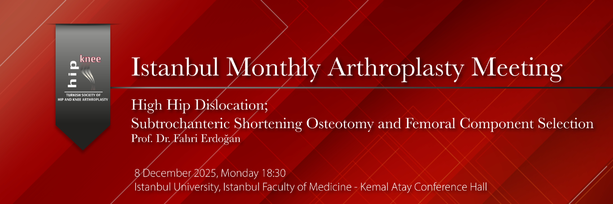

Dear Colleagues,
The Istanbul Monthly Arthroplasty Meeting will be held on Monday, December 8th at 18:30 at Istanbul University – Istanbul Faculty of Medicine, Kemal Atay Conference Hall.
The topic of our December meeting is:
“High Hip Center; Subtrochanteric Shortening Osteotomy and Femoral Component Selection.”
In adult patients with high hip dislocation, femoral shortening osteotomy and the selection of an appropriate femoral component—procedures that may be required during total hip arthroplasty—will be addressed in a comprehensive presentation by our esteemed professor, Prof. Dr. Fahri Erdoğan, who has made valuable contributions to the literature in this field. The session will be moderated by Prof. Dr. Nejat Güney. The published scientific work of our professors, their extensive clinical experience, and their surgical expertise in challenging cases make this meeting particularly valuable.
We warmly invite all colleagues to attend this session, which we believe will be especially beneficial for our junior residents and specialists, with the hope that our monthly meeting will be productive for all participants.
Moderator:
Prof. Dr. Nejat Güney
Program:
18:30 – 19:00 Refreshments – Dinner
19:00 – 19:30 “High Hip Center; Subtrochanteric Shortening Osteotomy and Femoral Component Selection”
Prof. Dr. Fahri Erdoğan
19:30 – 20:00 Case Discussions
Note:
For any cases you would like to have discussed or results you wish to present, please contact us prior to the meeting for planning purposes.
Contact for the Meeting:
Prof. Dr. Vahit Emre Özden
Tel: 532361464
vahitemre@gmail.com
Prof. Dr. Cengiz Şen
Istanbul University, Istanbul Faculty of Medicine
